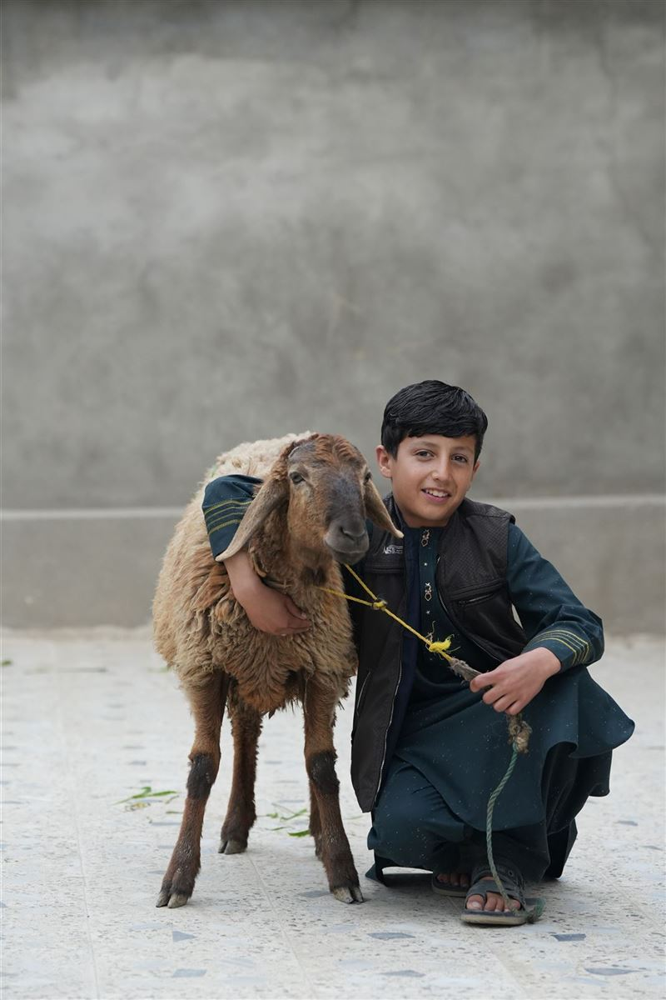
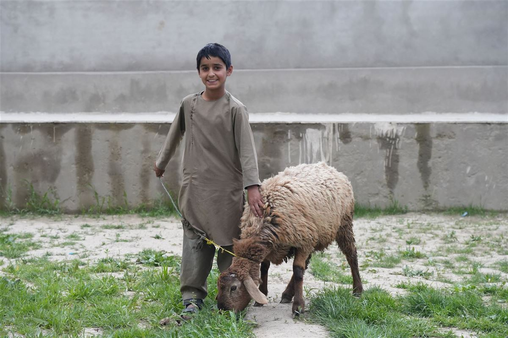
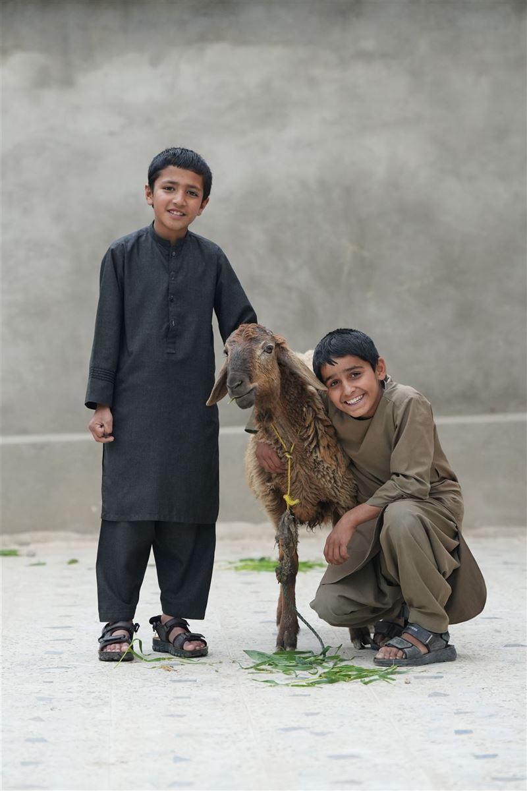
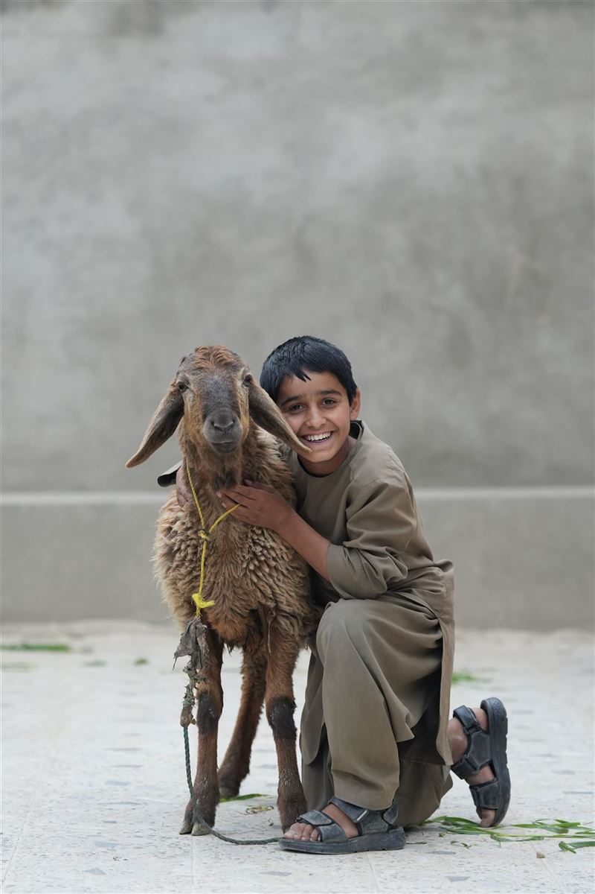
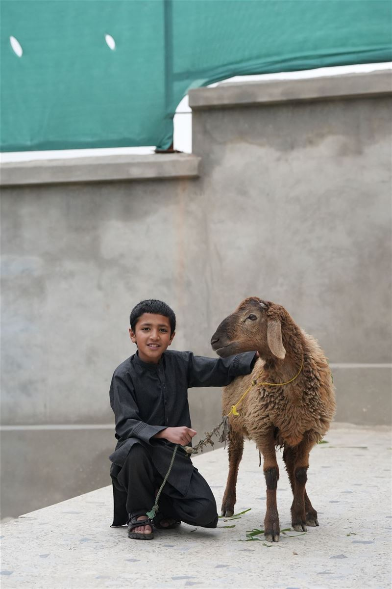
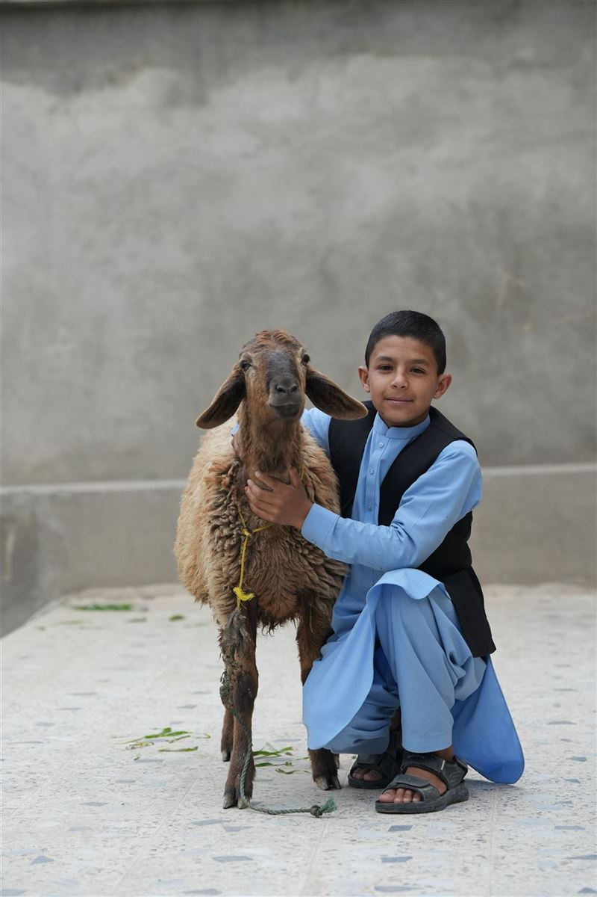
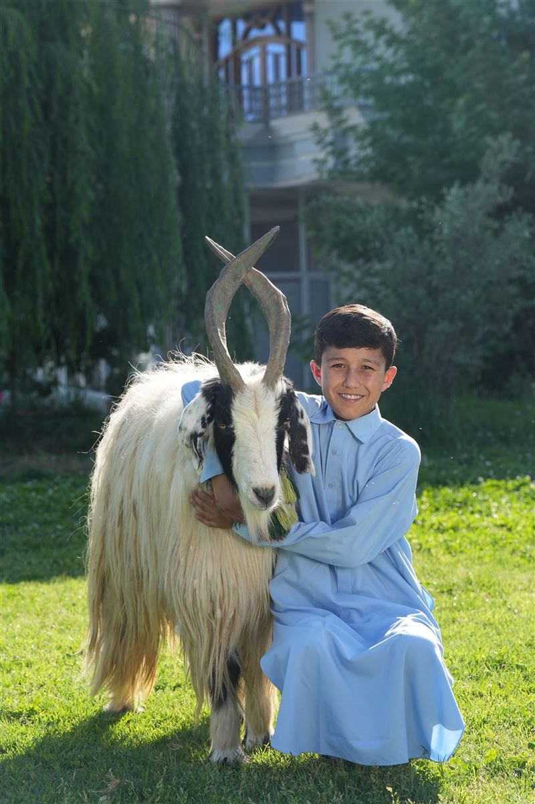
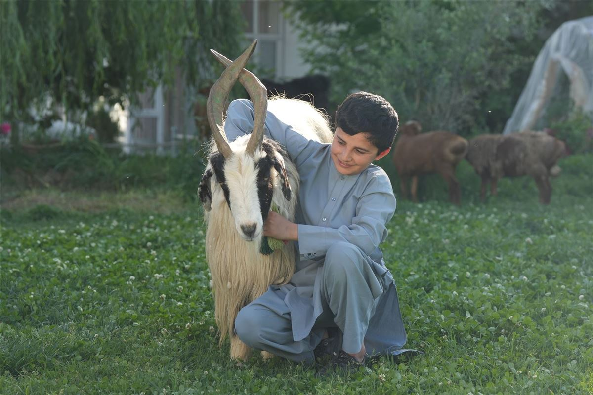
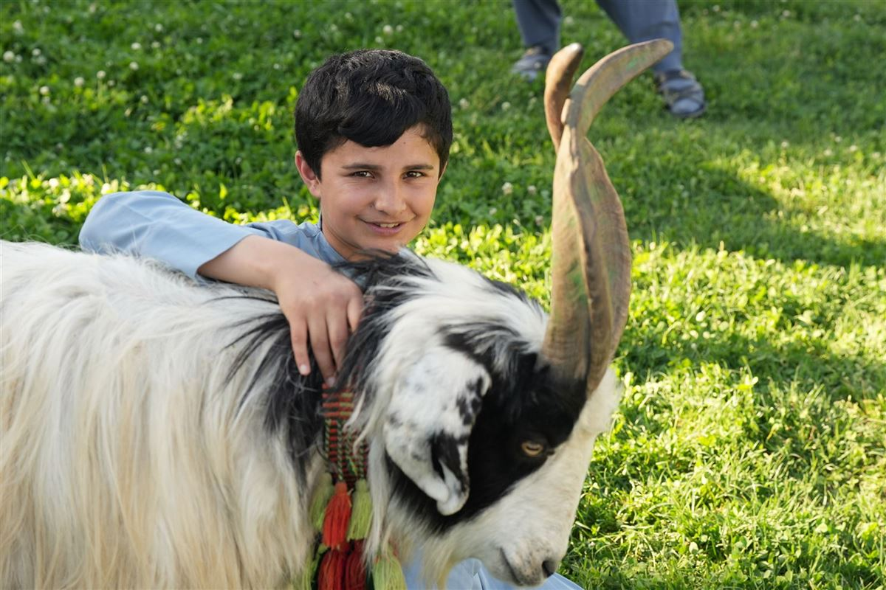
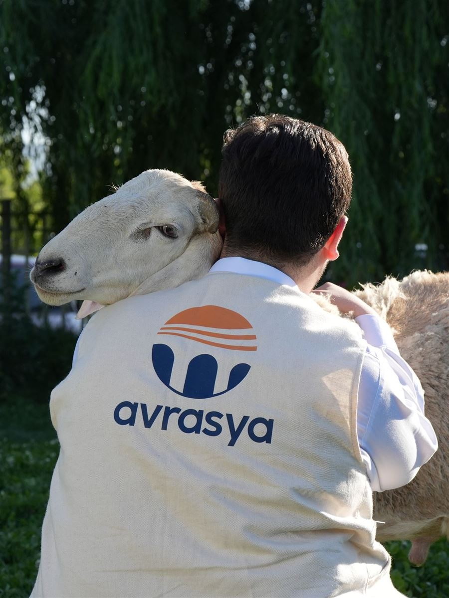

Adak, akika ve şükür kurbanlarınızı yıl boyunca kabul ediyor; usulüne uygun olarak kesilen kurban etlerini ihtiyaç sahibi ailelere ulaştırıyoruz.

Nafile kurban çalışmalarımızdan karelerNafile kurban faaliyetimiz, Kurban Bayramı dönemiyle sınırlı kalmayan ve yılın her ayı devam eden bir ibadet ve hasenat faaliyetidir. Bağışçılarımızın adak, akika, şükür veya hususi niyetleriyle vekâletlerini verdikleri kurbanlar; derneğimiz aracılığıyla ihtiyaç sahiplerine ulaştırır. Bu sayede bir yandan bağışçılarımızın ibadetine vesile olurken, diğer yandan yıl boyunca ihtiyaç sahibi ailelerin sofralarına kurban etlerini ulaştırmış oluyoruz.
Kesimler İslami usullere uygun şekilde yapılarak ihtiyaç sahiplerine ulaştırılır. Her vekâlet, bağışçının adına kayıt altına alınır ve kesim esnasında kaydedilen video bağışçıyla paylaşılır.
Adak, akika ve şükür kurbanı vekâletleri yıl boyunca kabul edilir.
Veteriner kontrolünde, usulüne uygun kesim ve aynı gün hijyenik paketleme.
Her bağışçıya kesim ve dağıtım fotoğraflarıyla birlikte detaylı rapor sunulur.
Nafile kurban hizmetimiz, bağışçı talebinin alınmasından dağıtım raporuna kadar düzenli bir akış içinde yürütülür:
Bağışçının niyeti (adak, akika, şükür) kayıt altına alınır ve sesli arama ile vekâlet alınır.
Kurban için uygun yaş ve sağlık şartlarını taşıyan hayvan, veteriner kontrolüyle temin edilir.
İslami usüllere uygun şekilde kesim gerçekleştirilir ve kayıt altına alınır.
Etler hijyenik ortamda paketlenir ve aynı gün tespit edilen ihtiyaç sahibi ailelere ulaştırılır.
Kesim ve dağıtım görselleriyle birlikte tamamlanan vekâletin raporu bağışçıya iletilir.
Nafile kurban çalışmalarımızdan kareler:










Bu sayfa, sahadan yeni fotoğraflar eklendikçe güncellenecektir.
Nafile kurban hakkında merak edilenler:
Şifa kurbanı, Müslüman topluluklarda sağlık sorunlarıyla mücadele eden bireyler veya sevdikleri için Hz. Allah rızası için kesilen özel bir kurban türüdür.
Şifa kurbanının kesilme amacını açıklayan bazı nedenler şunlardır: iyileşme dileği, korunma talebi, manevi destek, ibadet ve yakınlık, toplumsal dayanışma.
Müslümanlar, sevdiklerinin veya kendilerinin sağlık sorunlarıyla mücadele eden hastalar için şifa dileklerini Allah'a iletmek amacıyla şifa kurbanı keserler.
Şifa kurbanı, İslam inancına göre diğer kurbanlardan farklı bir kesim yöntemi gerektirmez. Kesim, İslami usullere uygun olarak gerçekleştirilir.
Şifa kurbanı, herhangi bir zaman kesilebilir. Kurban kesimi için belirli bir tarih veya zaman sınırlaması yoktur.
Şifa kurbanına niyet etmek için samimi bir kalple Hz. Allah'a yönelmek gerekmektedir. Niyet, içtenlikle ve Allah'ın rızasını kazanma amacıyla yapılır.
Şifa kurbanının eti, İslam inancına göre öncelikli olarak ihtiyaç sahiplerine dağıtılmalıdır. Bu nedenle, şifa kurbanının etinden öncelikli olarak yoksullar, fakirler ve ihtiyaç sahipleri yiyebilir.
60 parça şifa kurbanı, özel bir uygulamadır ve kesilen kurbanın etinin belirli bir sayıda parçaya bölünmesini ifade eder.
Evet, şifa kurbanı vekalet yoluyla kesilebilir. Vekalet, bir kişinin başka bir kişiye kendisi adına bir görevi veya ibadeti yerine getirme yetkisi vermesidir.
Akika kurbanı, dinimize göre yeni doğan bir çocuğun doğumunun yedinci gününde Allah'a şükür niyetiyle kesilen kurbana verilen isimdir.
Akika kurbanı, nafile bir ibadet olduğu için belirli bir zaman aralığı şartı yoktur. Ancak genel olarak tavsiye edilen uygulama, yeni doğan bir çocuğun doğumunun yedinci gününde akika kurbanının kesilmesidir.
Akika kurbanında genel olarak erkek çocuk için iki, kız çocuk için ise bir adet kurban kesilir inancı yaygındır.
Akika kurbanı kesmek sünnettir ve tavsiye edilen bir ibadettir. Kesmek kesin bir şart değildir ve zorunlu değildir. Ancak pek çok Müslüman toplumunda ve kültüründe geleneksel olarak uygulanan bir adettir.
Akika kurbanının eti, İslam geleneğine göre çeşitli kişilere dağıtılabilir. Bunlar; aile, komşular, ihtiyaç sahipleri.
Akika kurbanı için belirli şartlar bulunmaktadır. İşte akika kurbanı için dikkate alınması gereken bazı önemli şartlar: kesim zamanı, kesilecek hayvan, kesim şekli, dağıtım, dua ve niyet.
Kişinin maruz kaldığı kaza, bela ve felaketlerden kurtulmasına, hastalığının iyileşmesine ve kavuştuğu güzelliklere şükür niyetiyle Allahü Teala adına kesmiş olduğu kurbana şükür kurbanı denilmektedir.
Şükür kurbanına niyet; kavuşmuş olduğum maddi manevi nimetlere şükür niyetiyle genel bir niyet ve yahut ta hususi bir durum zikredilerek şükür niyeti alınır ve Hazreti Allah için kurban kesilir.
Şükür kurbanı nafile bir ibadettir. Kişi kendi tercihiyle bu kurbanı kesmeyi murat eder ve niyeti üzere kurbanını Hazreti Allah için keser. Şükür kurbanı örfi olarak kültürümüzde önemli bir yer teşkil etmektedir. Geçmiş tarihlerden günümüze kadar elde edilen güzelliklere, ulaşılan hedeflere şükür nişanesi olarak kesilmeye devam etmiştir.
Şükür kurbanı maddi manevi olarak kazanılmış iyi hallere, güzel hadiselere ve yahut eşyalara ulaşıldığı zaman kişinin Cenabı Allah'a şükrünü izhar etmesi kabilinden kesilmektedir. Hazreti Allah, İbrahim suresinin 7. ayeti kerimesinde "…eğer şükrederseniz muhakkak ki sizlerin üzerinize nimetimi artırırım…" buyurmaktadır. Bu haseple güzelliklere kavuştukça kişinin üzerindeki maddi manevi güzelliklerin artması için şükür kurbanı kesilmesi tavsiye edilmektedir.
Şükür kurbanının etini kesen kişi, ailesi ve yakınları yiyebilir ve yahut ta tasadduk edebilir. Fakir fukaraya ve sair ihtiyaç sahiplerine tasadduk etmekle beraber bunun en güzeli Kuran-ı Kerim talebelerine yapılan tasadduktur.
Bayram kurbanı yalnızca Kurban Bayramı günlerinde kesilir; nafile kurbanlar ise adak, akika ve şükür niyetiyle yıl boyunca kesilebilir.
Derneğimize iletişim kanallarından ulaşarak vekâlet formunu doldurmanız ve bağışınızı yapmanız yeterlidir; vekâletiniz dijital olarak kayıt altına alınır.
Etler aynı gün hijyenik şekilde paketlenir ve önceden tespit edilen ihtiyaç sahibi ailelere taze olarak ulaştırılır.
Kesim esnasında kaydedilen video ve dağıtım bilgileri bağışçıyla paylaşılır.
Adak kurbanı kesilebilmesi için belirli şartlar bulunmaktadır. İşte adak kurbanı şartları:
Niyet: Adak kurbanı kesimi için öncelikle adayan kişinin kesim niyetiyle bir adakta bulunması gerekmektedir. Niyet, kurbanın kesim amacının Allah'a adanması anlamına gelir.
Kesim Yeri: Adak kurbanı, kesim için belirlenmiş olan uygun bir mekanda kesilmelidir. Kesim yeri, temizlik, hijyen ve dini kurallara uygunluk açısından önemlidir.
Kurbanın Cinsi: Adak kurbanı olarak seçilen hayvan, sağlıklı, kusursuz ve kesime uygun olmalıdır. Genellikle sığırlar, koyunlar veya keçiler tercih edilmektedir.
Kesim Süresi: Adak kurbanı, adayan kişinin belirlediği süre veya şartın gerçekleşmesiyle kesilmelidir. Belirlenen süre veya şartlar yerine getirildiğinde kurban hemen kesilmelidir.
Kesim Yöntemi: Adak kurbanı kesimi, dini usullere ve kurallara uygun bir şekilde gerçekleştirilmelidir. İslam'a göre helal kesim yöntemi olan "zabih" uygulanmalıdır.
Adak kurbanı, adayan kişinin belirli bir süre veya şartın gerçekleşmesiyle kesilmesi gereken bir kurbandır. Örneğin, bir kişi Kurban Bayramı içerisinde adak kurbanı keseceğini belirtmişse, kurbanı bayramı bitmeden kesmesi gerekmektedir. Belirlenen zaman aralığında ve şartın gerçekleşmesiyle birlikte adak kurbanı kesilmesi önemlidir. Adak kurbanı kesim zamanı ve şartları, adayan kişinin niyetine, adakta bulunduğu konuya veya kişisel tercihlere bağlı olarak değişebilir. Ancak, belirlenen süre veya şartlar yerine getirildiğinde adak kurbanı hemen kesilmelidir.
Adak kurbanı adayan kişi: Adak adayan kişi, kurbanın etini yiyemez. Kurbanı Allah'a olan adak niyetiyle kesmiş olması nedeniyle kendisi bu etten yememelidir.
Adak adayan kişinin anne-babası: Adak adayan kişinin anne-babası, adadıkları kurbanın etini yiyemezler.
Adak adayan kişinin dede-nenesi: Adak adayan kişinin dede ve ninesi, adak kurbanı etini yiyemezler.
Adak adayan kişinin çocukları ve torunları: Adak adayan kişinin çocukları ve torunları da adak kurbanı etini yiyemezler.
Yukarıda belirtilen kişiler adak kurbanı etinden yiyemezler ve bu kurala dikkat edilmesi önemlidir.
Adak kurbanı etini yiyebilecek kişiler şunlardır:
Fakir ve ihtiyaç sahipleri: Adak kurbanı etinin asıl amacı, fakir ve yoksul insanlara dağıtılarak onların ihtiyaçlarının giderilmesidir.
Akrabalar ve komşular: Adak adayan kişinin anne, baba, dede, nine, çocuk ve torunları dışındaki diğer akrabalar bu etten yiyebilir. Ayrıca zengin bile olsalar, ihtiyaç sahibi olmayan komşulara da ikram edilebilir.
Herkes: Adak etini, adak adayan kişi ve usul ile furu'u (yani kendisinin üst soyu ve alt soyu) dışındaki herkes yiyebilir. Yani, adakta bulunan kişinin eşi ve diğer tüm zengin ya da fakir Müslümanlar bu etten faydalanabilir.
Özetle, adak adayan kişi ve onun alt ve üst soyu adak etinden yiyemezken, bu et fakirlerden başlayarak tüm diğer Müslümanlara dağıtılabilir.
Adak kurbanında pay edilmesinde herhangi bir sınırlama bulunmamaktadır. Adak adayan kişi, kesilen hayvanın etini dilediği şekilde paylaştırabilir. Ancak, adak kurbanı etini yiyemeyecek olan kişiler bulunmaktadır. Bunlar, adak adayan kişi, annesi, babası, dedesi, ninesi, çocukları ve torunlarıdır. Adak kurbanının eti, bu kişilere verilemez. Haricindeki ihtiyaç sahipleri ise adak kurbanı etinden faydalanabilir. Dolayısıyla, adak adayan kişi, eti yiyemeyecek olan yakınları haricindeki ihtiyaç sahiplerine dağıtım yapabilir, bu dağıtımı kendi takdirine bağlı olarak gerçekleştirebilir. Bu sayede, adak kurbanı hem adayan kişinin yakınlarına hem de ihtiyaç sahiplerine yardım sağlamış olur.
Adak adamak, İslam dininde bir taahhüt şeklidir ve dini bir ibadettir. Ancak, adak adamak kişinin kendi iradesine ve inancına bağlı bir karardır. Kişi, bir dileğinin gerçekleşmesi veya Allah'a şükranını ifade etmek amacıyla adak adamaya karar verebilir.
Adak adamak, ciddiyet gerektiren bir taahhüttür ve kişi bu taahhüdünü yerine getirmekle yükümlüdür. Adak adayan kişi, bu ibadeti yerine getirme konusunda titizlik göstermeli ve İslam'ın öngördüğü usullere uygun olarak adak kurbanı kesmelidir.
Ancak, adak adamak herkes için zorunlu değildir. Kişi, kendi inancı ve isteği doğrultusunda adak adamaya karar verebilir. Adak adayan kişinin, ibadetin ciddiyetini anlaması ve adak kurbanının gerekliliklerini yerine getirmesi önemlidir.
Sonuç olarak, adak adamak kişinin kendi inancına ve iradesine bağlı bir karardır. İslam dininde adak adamak meşru bir ibadet olarak kabul edilir, ancak bu kararı veren kişinin ciddiyetle taahhüdünü yerine getirmesi önemlidir.
Adak kurbanı, bir kişinin Allah'a adak olarak sunduğu bir kurbandır. Bu özel ibadette, adayan kişinin belirli bir niyetle kurban olarak seçtiği sağlıklı bir hayvan kesilir. Adak kurbanı, bireyin Allah'a olan bağlılığını ifade etmek, dualarını, dileklerini veya şükranını sunmak amacıyla gerçekleştirilen manevi değeri yüksek bir ibadettir. Bu ibadet, aynı zamanda toplumsal dayanışmayı ve paylaşmayı teşvik etmektedir.